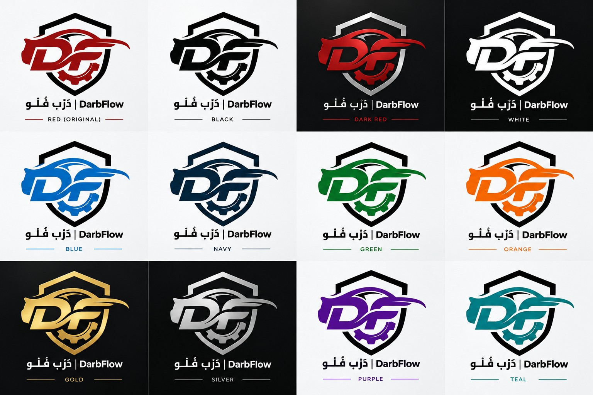
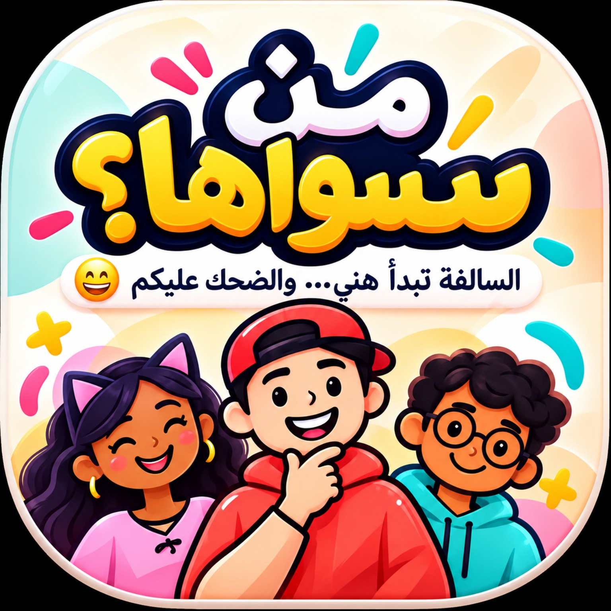

أبني وأطوّر مشاريع رقمية حقيقية
مرحبًا، أنا
علوي عبدالرحمن السقاف
أبني كـWeb Developer
أطوّر منتجات رقمية بهوية واضحة وتجربة استخدام قوية — من الأنظمة والواجهات إلى التطبيقات والألعاب التفاعلية.
واجهة عربية أولًا
Light / Dark Mode
Ready for Railway
ALWI.AS
BUILDING

التركيز الحاليWeb • Apps • Games
↗
</> BUILD
✦ CREATE
لمحة سريعة
أرقام تعطي انطباع سريع عن رحلتي الحالية.
01
عنّي
أتعلم بالبناء، وأطوّر الفكرة لين تصير منتج.
أحب أشتغل على مشاريع لها استخدام حقيقي، وأجرّب تقنيات جديدة بدل ما أكتفي بالتعلّم النظري. أكثر شي يشدّني هو تطوير الويب، تصميم الواجهات، الأنظمة، والألعاب.
“
كل مشروع بالنسبة لي فرصة أتعلم شي جديد وأطلع بنتيجة أحسن من اللي قبلها.
02
المهارات والتقنيات
الأدوات اللي أستخدمها في مشاريعي الحالية.
تطوير الواجهات
بناء واجهات متجاوبة للجوال والكمبيوتر مع اهتمام بالحركة، سهولة الاستخدام والتفاصيل البصرية.
تطوير الأنظمة
بناء منطق الأنظمة والـ APIs وربط الصلاحيات والبيانات والعمليات اليومية داخل المشروع.
قواعد البيانات
تصميم وربط البيانات للمشاريع العملية ومتابعة العلاقات والعمليات بشكل منظم.
تطبيقات وألعاب
تطوير تجارب تفاعلية ومشاريع موبايل وألعاب، مع اهتمام بالتدفق وسهولة اللعب.
UI / UX
إعادة تصميم الصفحات، تنظيم المحتوى، وتحسين تجربة المستخدم لتكون أوضح وأفخم.
النشر وإدارة الكود
رفع المشاريع وإدارة التحديثات وتجهيزها للنشر على خدمات الاستضافة والبناء.
03
المشاريع الحالية
أفكار بدأت من الصفر وصارت مشاريع حقيقية.
مشاريع منشورة
ألعاب وتجارب رقمية
2026
01
SAAS / FULL-STACK
مباشر
دَرب فلو DarbFlow
نظام متكامل لإدارة شركات تأجير السيارات من شاشة واحدة: السيارات، الحجوزات، العقود، المدفوعات، المصروفات، الصيانة، الفروع، التقارير وبوابة العميل.

02
GAME / WEB & ANDROID
مباشر
من سوّاها؟
لعبة اجتماعية خليجية للجلسات والأصدقاء، فيها أنماط لعب مختلفة وتجربة أونلاين وأوفلاين، غرف، تصويت وتفاعل بين اللاعبين.

03
WEB / PERSONAL BRAND
أنت هنا
الموقع الشخصي
مساحتي الرقمية لعرض مشاريعي ومهاراتي. تصميم متجاوب بوضع فاتح وغامق، حركات هادئة وتجربة مناسبة للجوال والكمبيوتر مع عرض واضح للمشاريع الحالية.
ALWI.AS
AS.
Design • Frontend • Identity
04
حالياً أعمل على
الأشياء اللي أركز عليها الآن في مشاريعي.
تطوير DarbFlow
أحسن التجربة البصرية، وأضيف مزايا أقوى لإدارة شركات تأجير السيارات بشكل عملي واحترافي.
تحسين من سوّاها؟
أطوّر تدفق اللعب، الأونلاين، والتفاعل بين اللاعبين عشان تصير التجربة أمتع وأوضح.
رفع مستوى الواجهة
أشتغل على تفاصيل التصميم، الحركة، والأداء عشان كل مشروع يطلع فخم من أول نظرة.
05
عندك فكرة؟
تواصل
عندك فكرة؟
خلّنا نبنيها.
إذا عندك مشروع، فكرة أو تبغى نتكلم عن شي تقني، تقدر تتواصل معي مباشرة.
.png) Instagram
Instagram X
X GitHub
GitHub